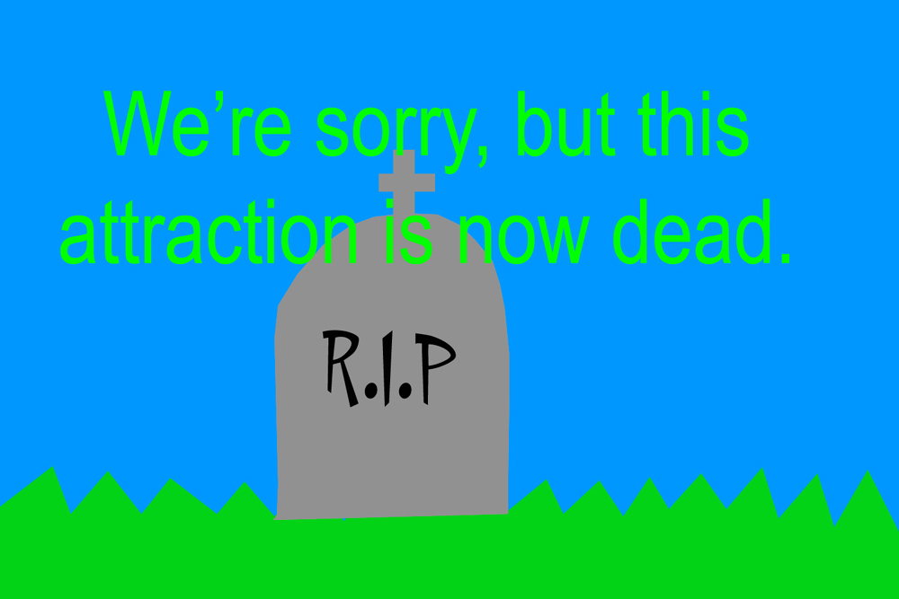
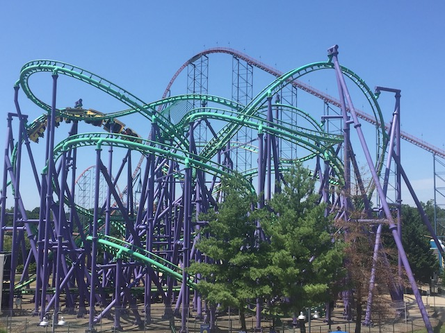
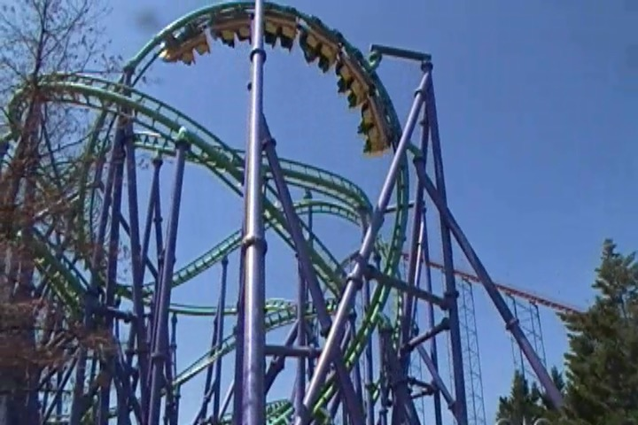
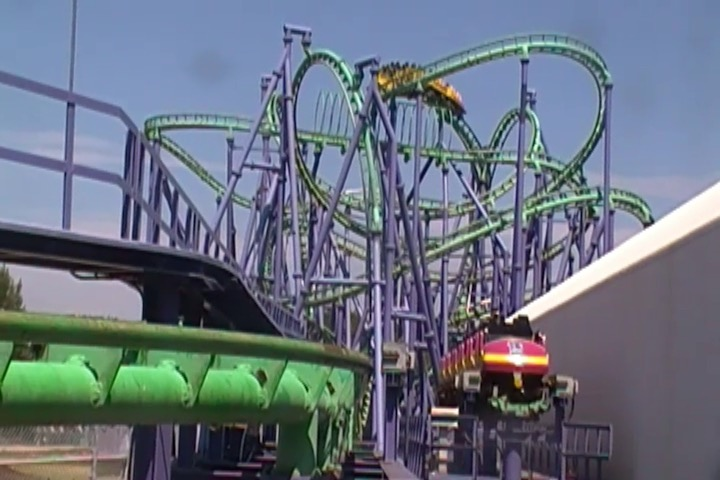
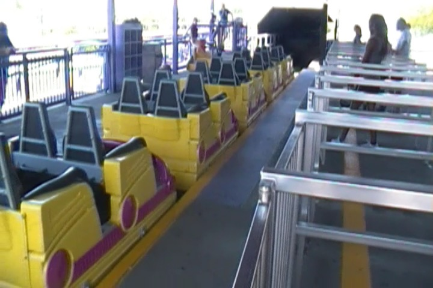
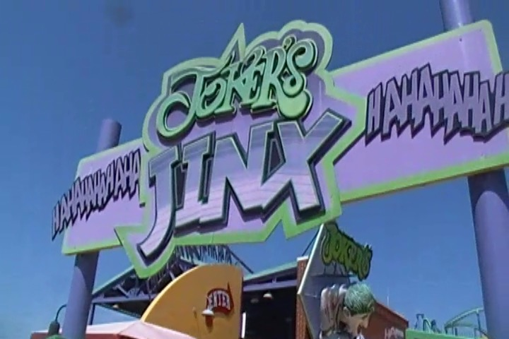

| |

Joker's Jinx Review

For today's review, we're traveling back in time to when Six Flags America still existed in order to ride Jokers Jinx. This was one of the Premier Spaghetti Bowls. Now most people don't think anything about these rides, but I'm just gonna be honest. I freaking love these rides. They're just so twisty, and dizzying, and disorienting. I LOVE THEM!!! LOVE THEM LOVE THEM LOVE THEM!!! So yeah. Let's not waste any more time. Ok, we're off!!! It actually had a decent launch. Not the best launch ever. But still. A very solid launch that's a ton of fun, spitting us into the twisty mess. And then with track all around us, we rose up, and flipped upsidedown into a Cobra Roll. With all the track around us, it was hard to see where we're going and what's going on. But yeah. We flipped upsidedown, headed out, flipped upsidedown again, and dived back down into the twisted mess. And then we rose on up again, flipping upsidedown into a sidewinder. SWEET!!! I loved all the twistiness and the disorientation. And yeah. At this point, we went through a couple of random turns up ahead. I will admit, this was the breather point of the ride. We lost a lot of our speed thanks to that sidewinder, and most of the twisted mess is below us, rather than above us. So we were just sort of turning and meandering at this point in the ride. Almost as if we were lost. Don't worry. We soon will be. =) We headed around a small dip, and through a little straight track. Now this may seem random, but be thankful for that straight track. Be very thankful for it. For you see, on the Flight of Fear clones (Which are both clones of Jokers Jinx), this is where the midcourse brakes are. And on those rides, the midcourse brakes are STRONG!!! But on Joker's Jinx, NO TRIM BRAKES!!! That straight track is where they're supposed to be. But instead, we just got a bit of straight track before we twisted into the real dizziness. YAY!!! Now the fun was really about to begin. =) We headed down a couple small spiral drops, and thanks to the speed we already had, this just laid it on and laid it on thick. We then head around a swooping turn, circling all the twistiness and madness, before a sharp turn, and it had some laterals. WOW!!! We then just continued to dip on down, gaining more and more speed as we went around more and more turns, getting crazier and crazier. Eventually, after a couple more turns, before heading into the corkscrew. At this point, we were going really freaking fast now, and our bodies were just used to heading around and around and around at this point. So when we did barrel on through that corkscrew, it was quite a surprise and incredibly disorienting. "WOAH!! WTF!!?" is pretty much all you were thinking. And then, we got spit out of the twisted mess, rose up a small hill, gain a tiny amount of floater air, and cruised on into the brake run. WOW!!! Just WOW!!! I know people don't really think much about these ride. But I loved it. I absolutely loved it. I'm so bummed that this ride didn't find a new home when Six Flags America died because this ride TRULY deserved it. The one positive I can take away from this is that I'm pretty sure that Jokers Jinx is being used as a parts donor for its clone, Poltergeist @ Six Flags Fiesta Texas. Which I REALLY hope that Jokers Jinx's death can help greatly extend the life of Poltergeist because that's just as good. So get out to Six Flags Fiesta Texas to ride Poltergeist. Because that's truly a great ride.
8/10
Location: Six Flags America
Opened: 1999
Died: 2025
Built by: Premier
Last Ridden: July 22, 2019
I have ridden this exact same ride at the following parks.
Kings Dominion
Kings Island
Six Flags Fiesta Texas
Joker's Jinx Photos




Home
|